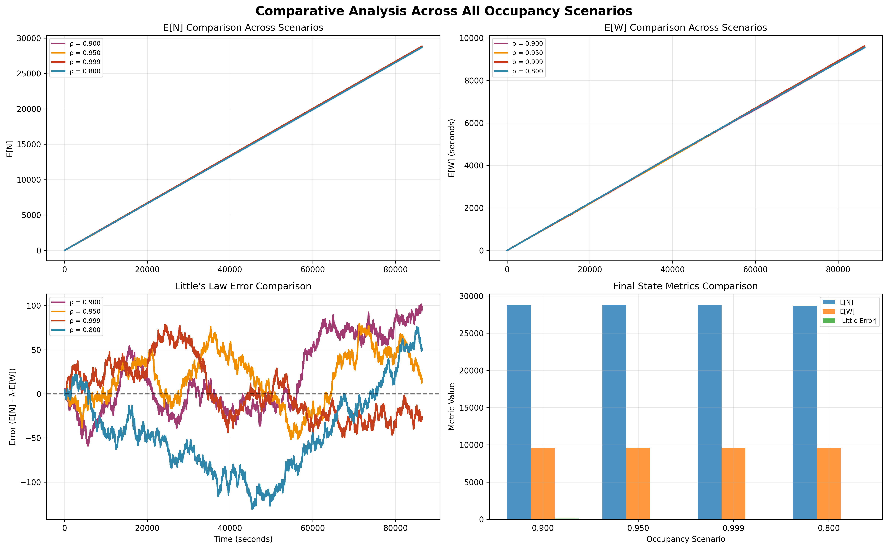
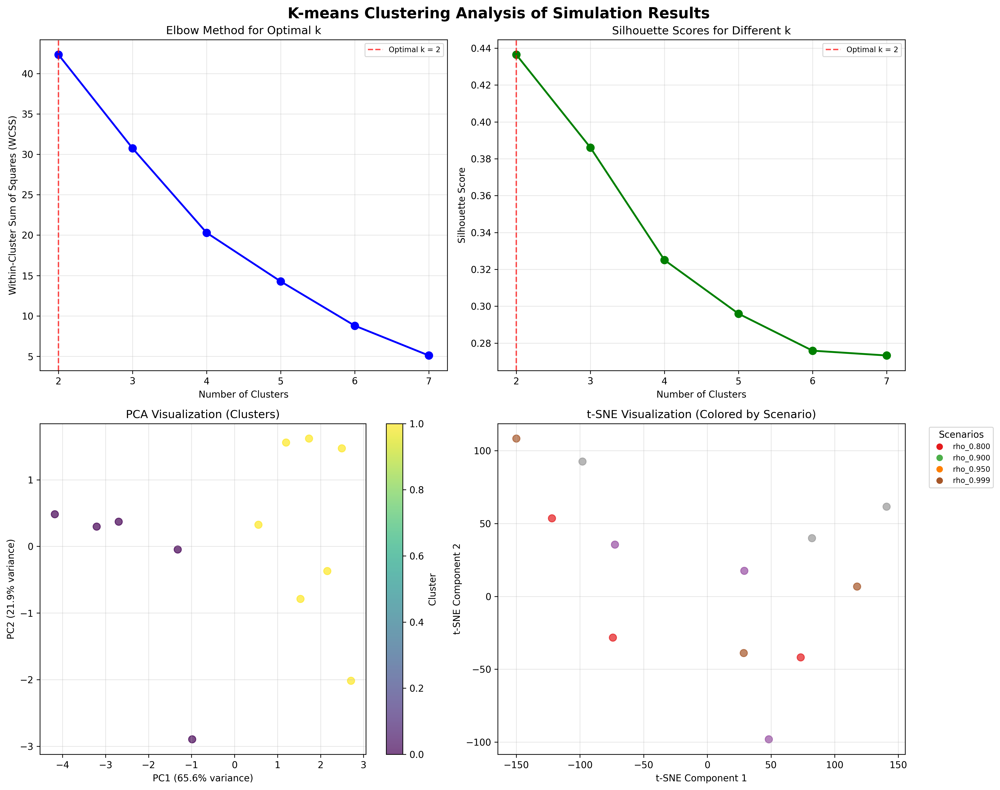

Author: Rafael Passos Domingues
Date: 2025-10-07 21:20:02
Comprehensive analysis of queueing system simulation across four occupancy scenarios.
Scenarios Analyzed: 4
Total Seeds: 12
Detailed time-series analysis showing system dynamics and convergence behavior.

Comparative analysis of E[N] and E[W] across all occupancy scenarios
Steady-state statistics computed from the final 100 samples of each simulation.
K-means clustering identified patterns in simulation data based on system behavior.

Comprehensive clustering analysis showing optimal k selection and cluster visualization